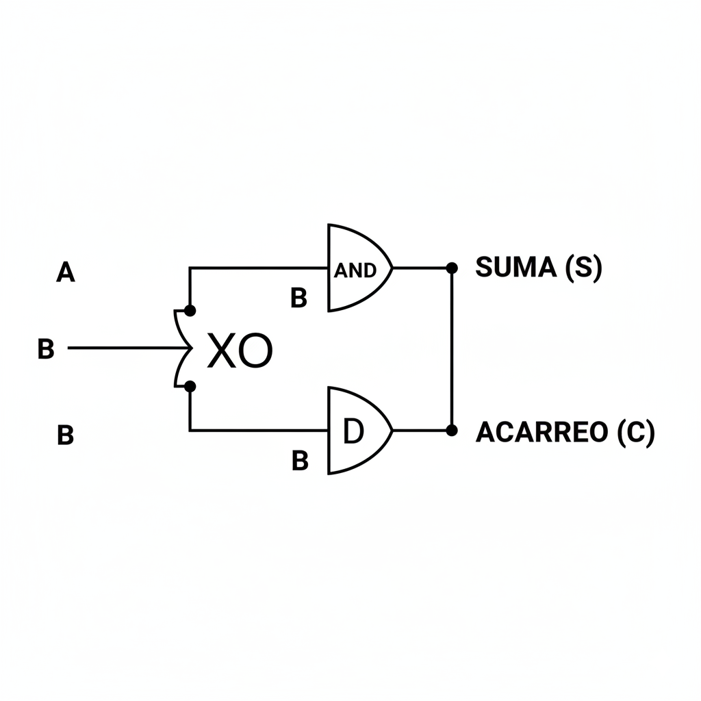

Unidad 3: Fundamentos de Cómputo - Lección 24
Si le preguntas a una compuerta cuánto es \(1+1\), no sabe qué decir, porque el "2" no existe en su mundo. Hoy vamos a enseñarle a sumar usando binario.
Antes de sumar, debes saber que no todos los bits valen lo mismo. En el número decimal 52, el 5 vale más que el 2. En binario pasa igual:
Regla de Oro: Al conectar circuitos, ¡nunca confundas el LSB con el MSB o tu número saldrá al revés!
Sumar en binario es igual que en decimal, pero solo llegamos hasta 1.
$$0 + 0 = 0$$
$$0 + 1 = 1$$
$$1 + 0 = 1$$
$$1 + 1 = 10_2 \quad \text{(Cero y llevo 1)}$$
¡Fíjate en la última línea! El resultado tiene dos dígitos: la Suma (0) y el Acarreo (1).
A los niños les encanta saber que pueden contar más allá de 10 con sus dedos. Enséñales a contar en Binario:
El resultado: Con una sola mano, en lugar de llegar a 5, ¡pueden contar hasta 31! (16+8+4+2+1). Es una forma divertida de introducir el concepto de Valor Posicional (LSB/MSB) sin usar pizarrón.
Hagamos la tabla de verdad de esta suma. Necesitamos dos salidas: Suma ($S$) y Acarreo ($C$).
| Entrada A | Entrada B | Salida S (Suma) | Salida C (Acarreo) |
|---|---|---|---|
| 0 | 0 | 0 | 0 |
| 0 | 1 | 1 | 0 |
| 1 | 0 | 1 | 0 |
| 1 | 1 | 0 | 1 |
Mira las columnas de colores:

Fig 1. El Semisumador (Half Adder). Con dos chips, el silicio sabe sumar.
Este circuito es genial, pero es "amnésico". Suma A y B, pero no tiene una entrada para recibir el "1 que llevabas" de una suma anterior. ¡Solo sirve para la primera columna de la suma!
Para sumar números grandes, necesitamos conectar varios en cadena. Eso lo haremos en la Lección 25.